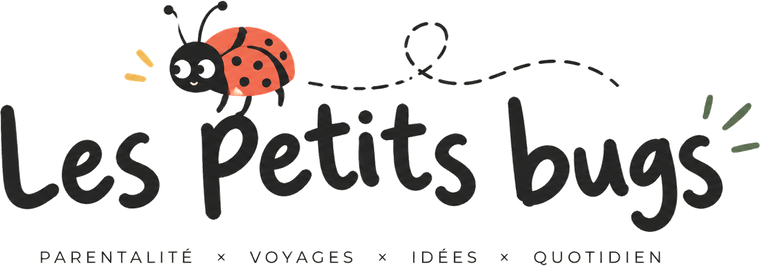
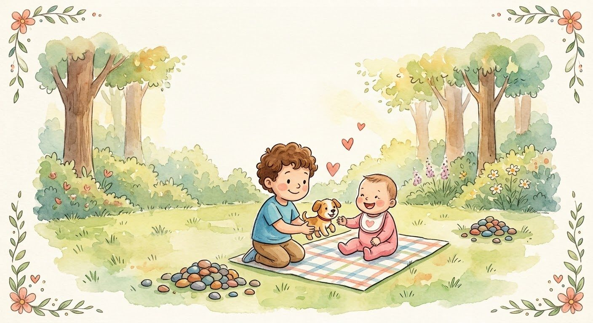

Le journal des parents curieux
Des idées, des conseils et des petites aventures pour accompagner les grands moments du quotidien.

Trois façons de transformer un « non » en alternative claire, sans bras de fer, à travers une scène vécue avec Gabriel et sa petite sœur.